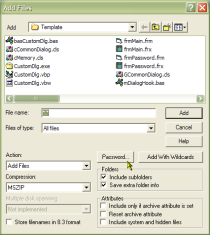

VB5 Common Dialog Template Sample (87K)
VB5 Common Dialog Template Sample (87K)
 VB6 Common Dialog Template Sample (80K)
VB6 Common Dialog Template Sample (80K)
 19 Dec 2002
19 Dec 2002
VB6 Version Added

Common Dialog Templates - Create a WinZip Style File Add Dialog
Using templates and subclassing to create fully-featured dialogs
This sample, from Cayce Cochran (cayce@fastlane.net), demonstrates how to use a dialog template with a File Open or Save CommonDialog. It takes advantage of the CommonDialog/Direct DLL component which now (versions dated 1 November 1999 and higher) includes the relevant support for templates.
About Dialog Templates
A dialog template is a concept popular in C and C++ coding. Basically they work like a really rubbish version of VB: you lay out the components of the resource in some sort of WYSIWYG environment, which is then written to a resource. When you come to show the dialog box in the C or C++ program, you pass in the dialog template resource and the appropriate functions are invoked to create the specified controls on your dialog for you.
Templates can be created quite easily if you have a Resource Editor tool (such as the ones provided with the C and C++ environments in Visual Studio, which will even import a VB form for you and spit out the equivalent dialog template). If you're feeling particularly in the mood for this sort of functionality then you should see it isn't particularly difficult to create your own by hand. Look at the files WAdlgres.rc and Resource.h in the download for hints on the format of a template.
Resources And VB
The first problem is the fact that the Common Dialog template function requires the template to be included in a resource in the executable. However, resources in VB apps are hidden from the API functions whilst you are debugging the app in IDE (you can only read VB resources in the IDE using the standard VB resource functions LoadResPicture, LoadResData and LoadResString).
Incidentally, in version 6 of you could debug VC++ projects in a very similar way to Visual Basic ones, it seems a shame that this sort of functionality was never provided for Visual Basic (and is actually retrograded in .NET). Resources aren't the only example of VB messing around with stuff behind the scenes. More annoying is what happens to your COM object's CLSIDs in the IDE...
Anyway, this problem is easy to work around by compiling the resource into a DLL and then using that when working in the IDE. The easiest way to do this is to create a VB ActiveX DLL project, add the .RES file to it and compile that (you may want to add a dummy method to the default Class1 just to give VB something to do when creating it).
Determining whether you are in the IDE or not is achieved using the classic Debug.Assert check:
Private m_bInIDE As Boolean
Public Property Get InIDE() As Boolean
Debug.Assert (IsInIDE)
InIDE = m_bInIDE
End Property
Private Property Get IsInIDE() As Boolean
m_bInIDE = True
IsInIDE = True
End Property
Because Debug.Assert code is only run when you are in the IDE, when the code is compiled the IsInIDE property is never called, and therefore the m_bInIDE property is never set to True.
CommonDialog/Direct and Dialog Templates
Telling the CommonDialog/Direct library to use a dialog template when it is shown is achieved by setting two properties:
- The TemplateName property (which accepts a the resource ID as a Long value).
- A parameter indicating where the resource can be found. If you are running in compiled code with the resource compiled into the executable, then set the hInstance property to the App.hInstance value. Otherwise, use cdLoadLibrary to specify to CommonDialog/Direct the filename of a DLL or EXE including the dialog as a resource. You must remember to call cdFreeLibrary to free up the resources associated with loading the file before your application terminates.
Because you probably need to know the value of any additional controls in your template, you should set the CommonDialog/Direct HookDialog flag to True. Having done this the class will raise InitDialog and WMCommand events, which you can use to populate controls and respond to changes in their values.